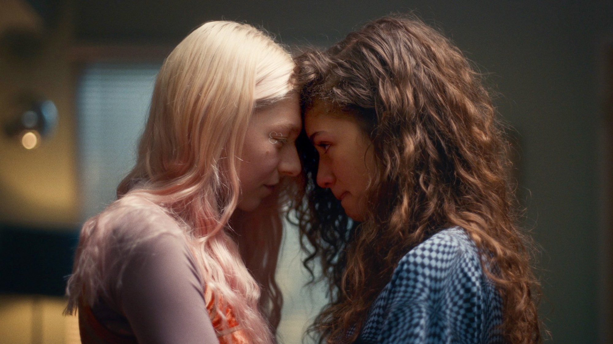
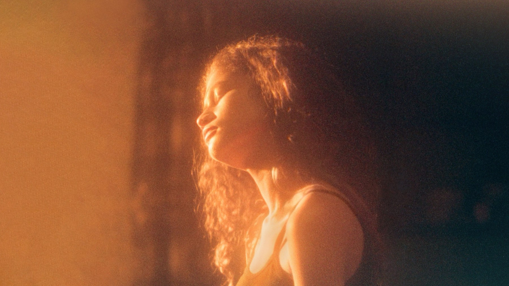
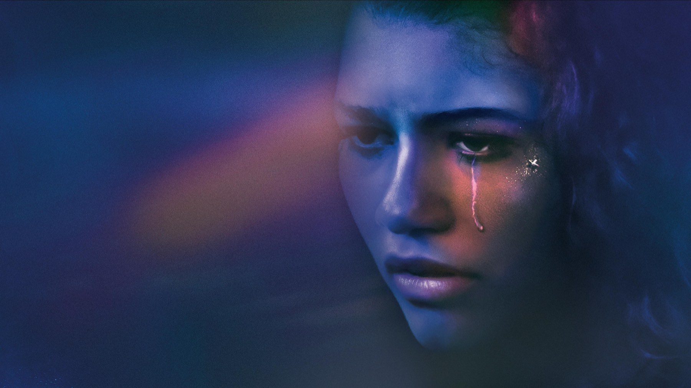

Euphoria – Stagione 2
Il capitolo più audace di Euphoria regala a Zendaya la sua prova più grande, però intorno a Rue lascia metà dei personaggi senza una storia
La seconda stagione di Euphoria contiene il miglior episodio della serie e, nello stesso tempo, il suo difetto più evidente. Sam Levinson la scrisse e la diresse da solo, otto puntate su otto, e si sente. Quando segue Rue, infatti, il racconto raggiunge una forza che la televisione per ragazzi non aveva mai cercato. Quando invece si allontana da lei, diventa una galleria di ritratti che entrano in scena e poi spariscono: Kat, che nel 2019 aveva una delle storie più originali, qui attraversa intere puntate senza un vero conflitto. Per questo pensiamo che il secondo capitolo vada visto, ma sapendo che cosa promette e che cosa lascia per strada.
Di cosa parla la seconda stagione
Rue racconta a tutti di essere pulita, però non lo è, e ha perfino trovato un modo per guadagnarci. Intanto Cassie, la più fragile del gruppo, si lascia attirare da una relazione segreta che può distruggere l'amicizia con Maddy. Sua sorella Lexi, che finora era rimasta ai margini, comincia allora a scrivere una recita su tutti loro. Nate resta violento come prima, ma è diventato più astuto. Sullo sfondo c'è Fezco, che insieme al piccolo Ashtray manda avanti il suo commercio con una calma che sappiamo destinata a finire, e non a caso il primo episodio parte dal passato di Fezco, con la nonna che lo cresce dentro quel mestiere fin da bambino.
La scena che vale la stagione
Arriva nel settimo episodio, «The Theater and Its Double». Lexi porta in scena «Our Life», una recita scolastica che mette sul palco la sua famiglia e i suoi amici appena camuffati. In platea, però, le amiche si riconoscono una scena dopo l'altra, a cominciare da Cassie, perciò il disagio cresce fino a diventare evidente. Lexi, del resto, lo dice senza giri di parole: in originale «It's based on real people», cioè «È ispirata a persone vere». Poi parte il numero che tutti ricordano: la squadra di football balla sulle note di «Holding Out for a Hero» con una coreografia che mette Nate in ridicolo davanti all'intera scuola, e lui esce dalla sala furioso.
È la sequenza in cui Euphoria parla di sé stessa. Lexi infatti fa con i compagni quello che Levinson fa con i suoi personaggi: li espone davanti a tutti e li trasforma in spettacolo. Il bello è che la serie non si assolve, perché ci fa sentire dalla parte di chi viene messo in scena senza permesso. Maude Apatow, che fino a lì era stata la spalla di tutti, regge l'episodio con una timidezza che nasconde una spietatezza da drammaturga. Ed è qui, allora, che la serie diventa adulta: smette di guardare i ragazzi dal buco della serratura e si chiede che diritto abbia di farlo.

Il dettaglio che cambia la visione
Chi rivede questi episodi dopo il primo ciclo nota subito che l'immagine è diversa, e non per caso. Il direttore della fotografia Marcell Rév li girò in pellicola da 35 millimetri, su Kodak Ektachrome sviluppata con un procedimento incrociato che altera i colori e accentua la grana: voleva ottenere, ha spiegato, una sorta di ricordo del liceo. La recita di Lexi è il punto in cui questa scelta diventa racconto. Rév ha raccontato di aver usato l'illuminazione teatrale per esagerare certi momenti, sia sul palco sia nei ricordi veri dei personaggi, quindi la luce del palcoscenico invade la vita reale e lo spettatore non distingue più dove finisca la finzione di Lexi. Saperlo cambia la visione, perché quella grana calda smette di essere una decorazione e diventa la memoria deformata di chi guarda.
Il quinto episodio e Zendaya
L'altra vetta è «Stand Still Like the Hummingbird», che prende il titolo da una raccolta di saggi di Henry Miller. Racconta il giorno peggiore di Rue. Si apre nel salotto di casa Bennett: la madre ha appena scoperto la ricaduta, la sorellina Gia sente tutto. Rue è in astinenza, ha un debito che non può pagare, perciò si scaglia contro Jules e contro la famiglia. Poi scappa dall'auto che dovrebbe portarla in comunità, e da lì la puntata diventa una fuga che attraversa la casa di Lexi e Cassie, una villa sconosciuta e un incidente con la polizia alle calcagna. Zendaya recita con il corpo prima che con le parole, tanto che ha descritto quel set come «una zona di guerra», dove dopo ogni ripresa gli attori si abbracciavano. Per noi è l'ora più importante di tutta Euphoria, perché mostra la dipendenza senza la bellezza che la serie aveva sempre rischiato di regalarle.
Cosa non funziona
Il prezzo di tanta attenzione per Rue lo pagano gli altri. Kat resta quasi sempre in un angolo, e Barbie Ferreira lasciò la serie nell'agosto 2022 spiegando di sentirsi rimasta «un po' troppo a lungo». Cassie, invece, diventa una figura di pura crisi, ripresa spesso nuda o in lacrime, con un'insistenza che riaccende le accuse di sguardo morboso già mosse nel 2019. Anche la storia di Fezco, costruita con pazienza dalla prima puntata, si chiude in fretta. Il nostro giudizio è netto: Levinson sa raccontare benissimo una persona sola, ma qui dimostra di non saper più tenere insieme un gruppo, e così una serie nata corale finisce per somigliare a un assolo con delle comparse di lusso.
Il confronto con le altre stagioni e con Trainspotting
Nel 2019 lo stile e i personaggi andavano nella stessa direzione, tanto che il luna park dell'episodio 4 presentava una classe intera in un solo movimento, come raccontiamo nella nostra recensione di Euphoria – Stagione 1. Nel 2022, invece, la regia diventa più ambiziosa mentre il racconto si stringe intorno a pochi nomi, perciò i picchi salgono e i vuoti si allargano. La terza stagione, uscita nel 2026, ha poi portato i personaggi nell'età adulta e ha diviso il pubblico ancora di più, come scriviamo nella recensione di Euphoria – Stagione 3. Fuori dalla serie, il paragone più utile è quello che HBO stessa aveva suggerito nel 2019, cioè Trainspotting. Nel film di Danny Boyle, del 1996, Renton affronta l'astinenza chiuso dai genitori nella sua cameretta, tra allucinazioni di amici e di una neonata che striscia sul soffitto. Levinson invece fa l'opposto, perché nel quinto episodio la crisi di Rue non ha pareti: la costringe a correre attraverso un intero quartiere, quindi l'astinenza diventa una fuga. Messi in fila, i tre capitoli dicono una cosa chiara: Euphoria funziona finché resta attaccata al punto di vista di Rue, e il secondo lo dimostra meglio degli altri. Rivederlo oggi, però, ha un peso diverso, perché Angus Cloud, il volto di Fezco, è morto il 31 luglio 2023, prima delle riprese del terzo.

Come fu accolta
Gli ascolti furono enormi, perché il primo episodio raccolse 2,4 milioni di spettatori nella serata d'esordio su tutte le piattaforme di HBO, e l'intero ciclo arrivò a una media di 16,3 milioni a puntata contando HBO Max: dopo il Trono di spade, era il miglior risultato della rete in diciotto anni. La critica, invece, fu più tiepida che nel 2019, anche se l'episodio della recita, «The Theater and Its Double», ha il 90% di giudizi favorevoli e vinse quattro Emmy, tra cui fotografia e montaggio. Su Rotten Tomatoes ha il 78% di recensioni positive su 113, e nella pagina si legge il parere di chi la trovava ormai una serie «senza meta», anche se «ipnotica», mentre Metacritic le assegna 74 su 100. Agli Emmy del 2022, però, conquistò 9 premi su 16 candidature. Zendaya ottenne il secondo come attrice protagonista, quindi diventò la più giovane interprete della televisione con due Emmy, mentre Colman Domingo fu premiato come attore ospite per il ruolo di Ali, l'uomo che cerca di tenere Rue lontana dalla droga.
Vale la pena vederla?
Sì, soprattutto per il quinto e il settimo episodio, che da soli valgono l'abbonamento. Chi ha amato il primo capitolo per il racconto corale deve sapere però che qui il coro si assottiglia, e che alcune storie si chiudono senza una vera fine. Le scene di droga e di sesso sono più esplicite che nel 2019, quindi la sconsigliamo ai più giovani e a chi vive una dipendenza da vicino. Chi ha già visto la terza stagione troverà invece qui il momento in cui Rue tocca il fondo, e capirà meglio da dove riparte.
La seconda stagione di Euphoria è la più squilibrata e la più audace: dimentica metà dei suoi personaggi, ma con la fuga di Rue e la recita di Lexi regala le due ore più forti di tutta la serie.
Domande frequenti
Quanti episodi ha la seconda stagione di Euphoria?
Otto, trasmessi da HBO dal 9 gennaio al 27 febbraio 2022. Li ha scritti e diretti tutti Sam Levinson.
Quando è uscita in Italia la seconda stagione di Euphoria?
Su Sky Atlantic dal 17 gennaio 2022, una settimana dopo la prima puntata americana.
Dove vedere la seconda stagione di Euphoria?
In Italia è disponibile in abbonamento su Sky e NOW, insieme agli altri due capitoli.
Bisogna vedere gli episodi speciali prima di questi otto?
Non è obbligatorio, ma aiuta. Le due puntate extra uscirono tra dicembre 2020 e gennaio 2021, perché la pandemia aveva fermato le riprese, quindi riprendono le due ragazze subito dopo il primo capitolo.
Fonti consultate (11)
- Wikipedia – Euphoria season 2
- Wikipedia italiana – Euphoria (serie televisiva)
- Wikipedia – Euphoria (American TV series)
- Wikipedia – Euphoria season 3
- Wikipedia – Stand Still Like the Hummingbird
- Wikipedia – The Theater and Its Double (Euphoria)
- Wikipedia – Trying to Get to Heaven Before They Close the Door
- Wikiquote – Euphoria, stagione 2
- Wikipedia – Trainspotting (film)
- Rotten Tomatoes – Euphoria stagione 2
- TMDB – scheda e dove vederla in Italia